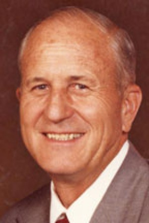
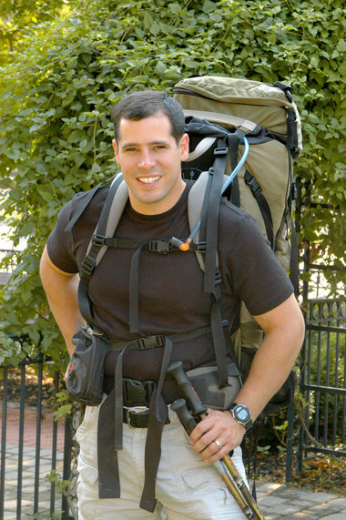

Age 57
Rob is a disciplined, practical, and efficient trainer. With roots in an affluent family, he played sports at a young age, and became competitive in football and lacrosse. After achieving a masters in health and fitness at the University of Pittsburgh, Rob started his own gym, where he now teaches group fitness lessons, in addition to coaching kids basketball. In order to keep his business and personal life separate, Rob follows a strict daily regimen. Rob prefers to communicate with his clients via pamphlets, and blanket announcements to his team. He doesn't use a computer for scheduling, but instead writes down dates on a calendar posted in the gym lobby.
Now that he is older, he lives through his clients, wanting to make them fit and talented. With his traditional value of working hard, he wants to leave behind a legacy of athleticism, sportsmanship, and professionalism by reinforcing these ideas in all his clients. White also strongly advocates the power of self-innovation. He wants his clients to be the best kind of athlete, one who is responsible, knows discipline, and has the willpower to be the best. In this sense, White sets the goals for his clients and pushes them to reach their full potential. He is the quintessential old football coach in the sense that he wants his clients to be the best because he wants to create that tradition of success through his name and expertise.
Age 28
Ben was obese for most of his childhood, and when he attended UCSB to study astrophysics, he took the opportunity to turn over a new leaf. He committed to lose weight, and change his lifestyle. He became an avid mountain biker, and learned to love health food. After graduating, he moved to Arizona to enjoy the outdoors and work part-time at an observatory. Ben started to work part-time as a personal trainer at a local gym because it was very rewarding to offer hope to others who wanted to lose weight. In his eyes, his clients are partners, and friends. He talks with them throughout the week via email, and chats in person while doing workouts. He specializes on 1-on-1 training, and whenever he takes on a client, he never compromises his own personal life schedule to accommodate clients.
Ben Sakai’s main goal is maintaining his own fitness. As a former fat boy, he values the importance of keeping himself healthy and happy. Through his journey, he realized various tips that can help people also make the large, sometimes overwhelming, positive change in their lives. For Ben, he wants to help his clients achieve this new, healthy lifestyle through working together and making the right changes together. Ben helps people to keep himself motivated to be healthy as well because seeing his clients reminds him of how he used to be and what he needs to do to maintain how he is now. He also feels great when he knows that he has taught someone well. With this in mind, Ben constantly strives to be helpful to his clients but also steps ahead of his clients. He has to be in better shape than them. He also finds it very rewarding to work with his clients when they make the same breakthroughs and realizations as he has. He feels like a mentor and friend, which helps to continue acting as his impetus in this training profession.
Age 41
Mike is a recently divorced single father, who devotes his life to one mission: making people healthy. He started his own business as a personal trainer because he wants control over every aspect of his training--he targets his training to fit his clients very specific goals, and gives them advice about everything from exercise routines, to diet and daily habits. He owns his own equipment, and doesn't use a gym, opting to instead make home-visits to clients. Mike feels pressure to stay fit, to set a good example for his clients. He is constantly working, either researching health facts, texting clients with reminders, or shifting around his schedule to incorporate new meeting times. He feels that all his effort has gone to waste when clients don't show up for sessions.
Mike Sypros is driven to influence and change the lives of his clients in a positive manner. He has lost control of his own life in over scheduling and through divorce so grappling for control in the lives of others is really satisfying to him. He has a lot of life experience and feels important and helpful when he is able to impart his information and advice on others who need his guidance and influence. He believes that helping people is a privilege and values the time he has with his clients. Mike makes a conscious effort to try to understand what his clients goals and aspirations because he genuinely wants the best for them.